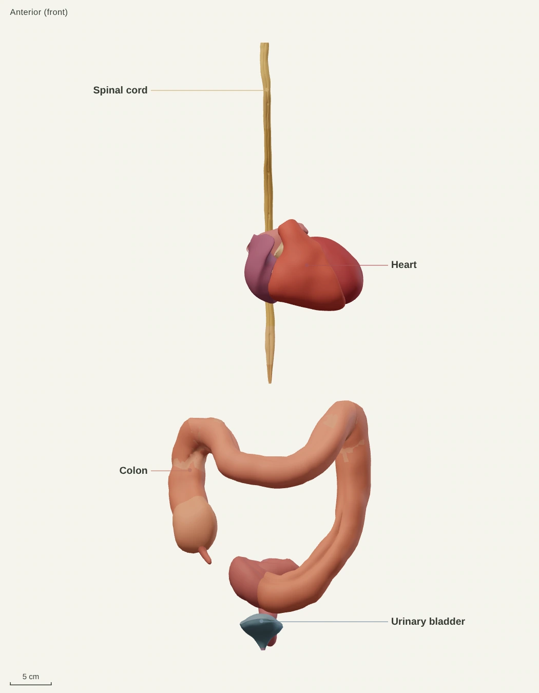
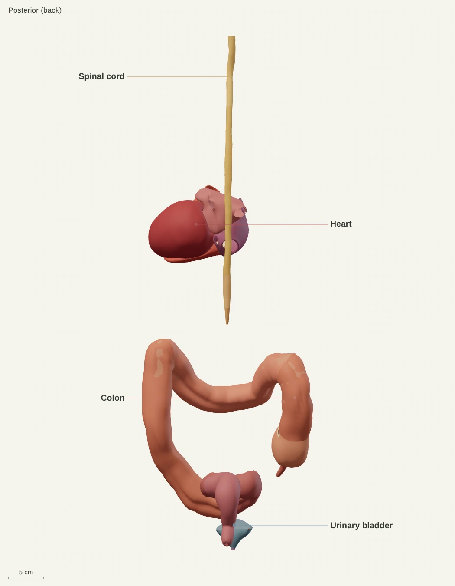
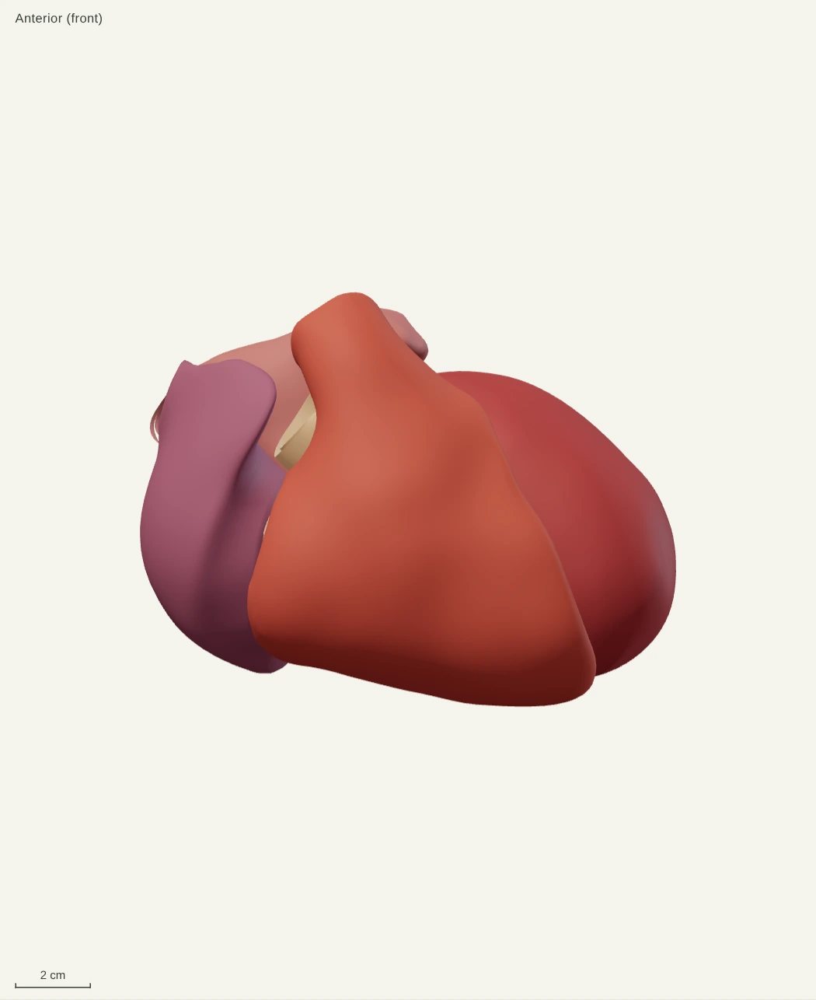
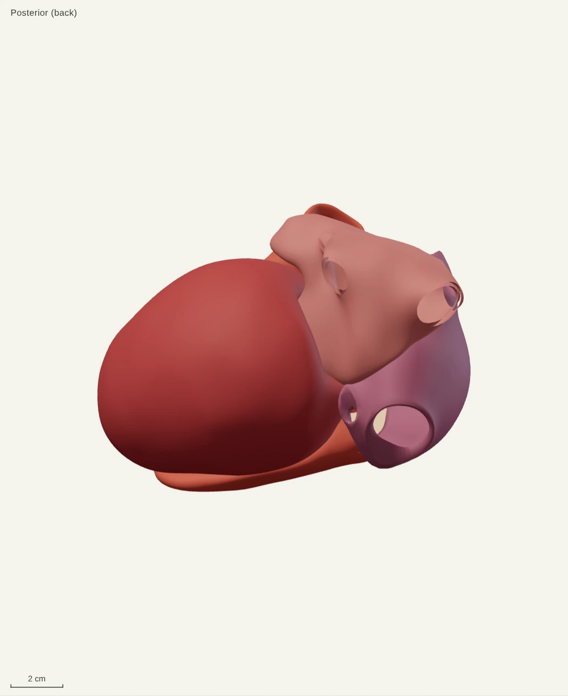
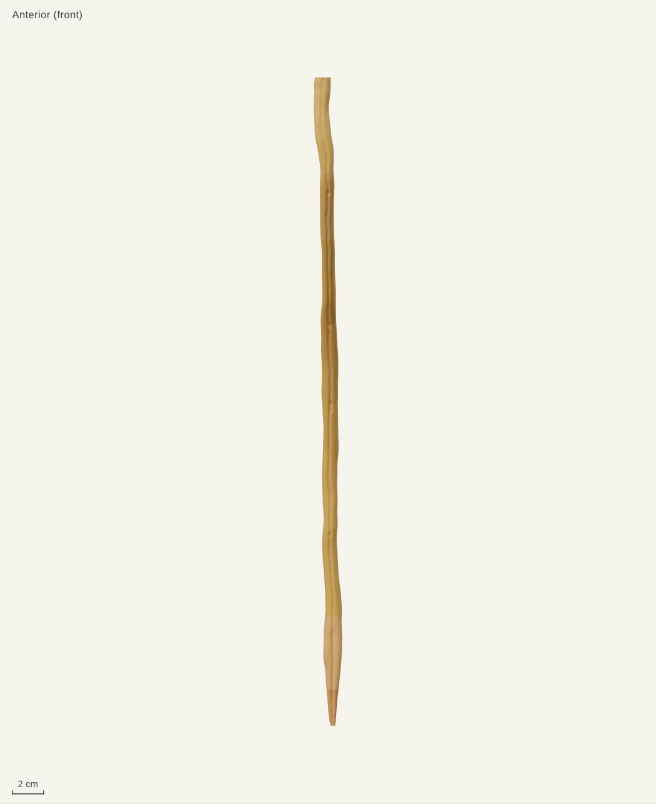
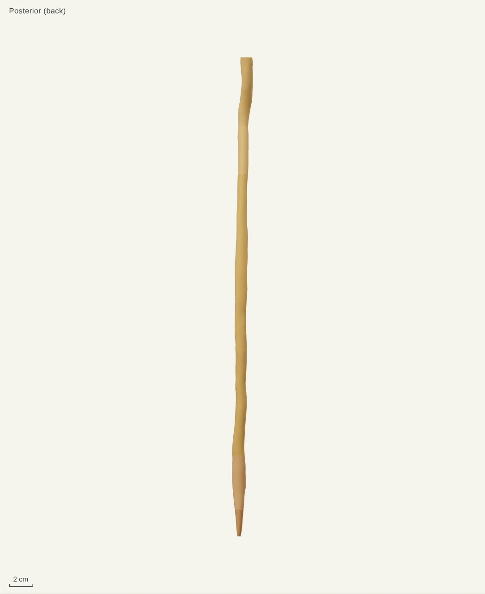
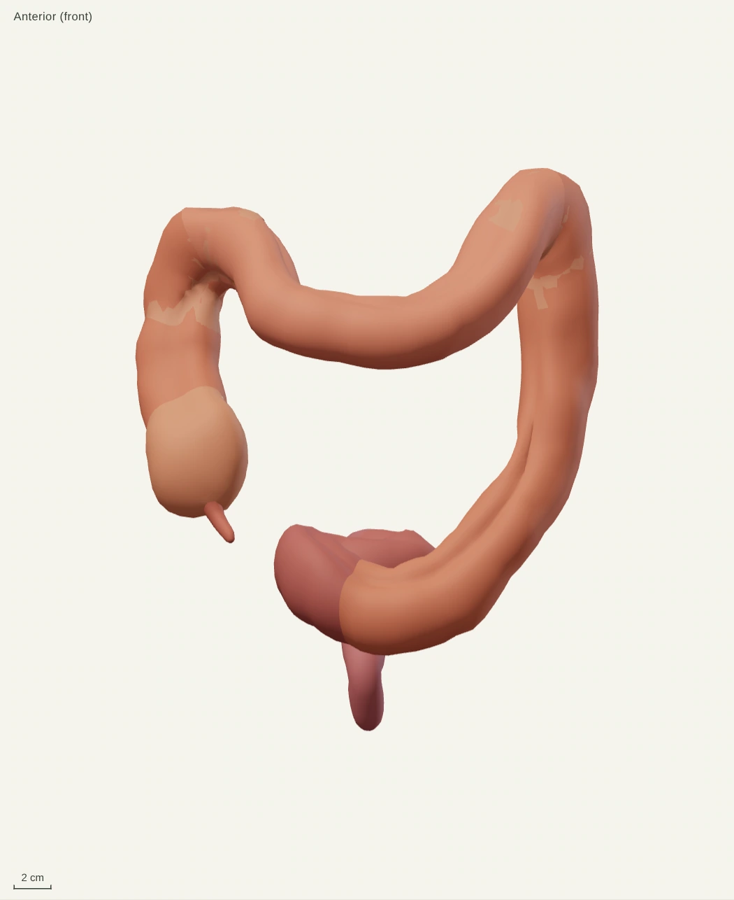
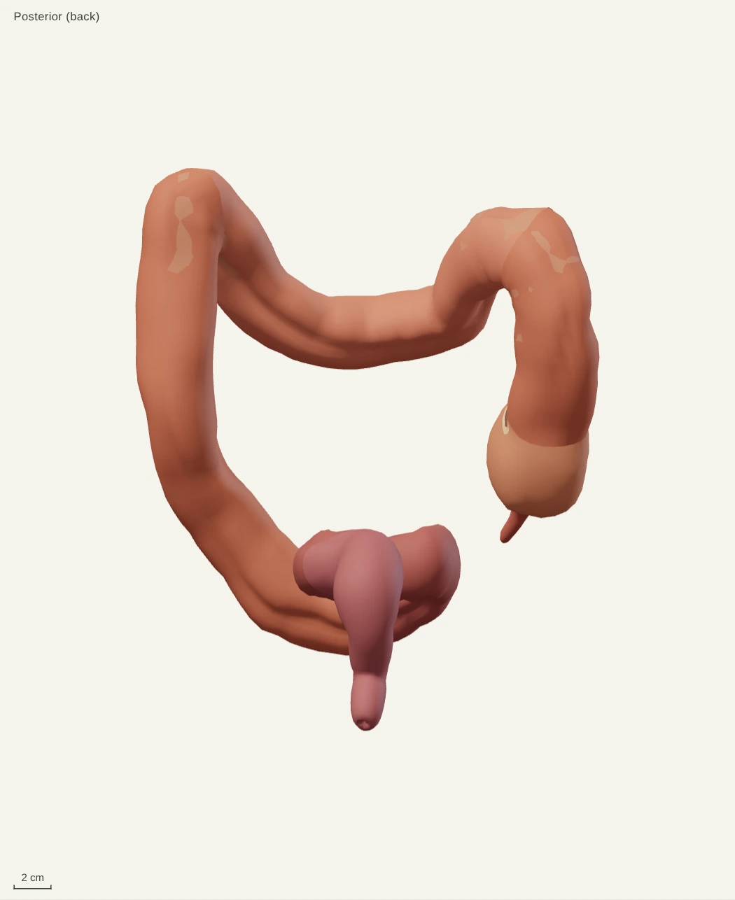
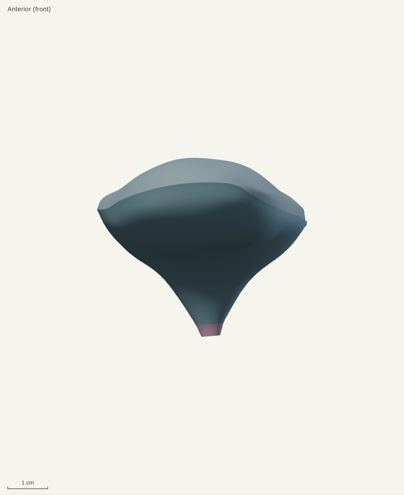
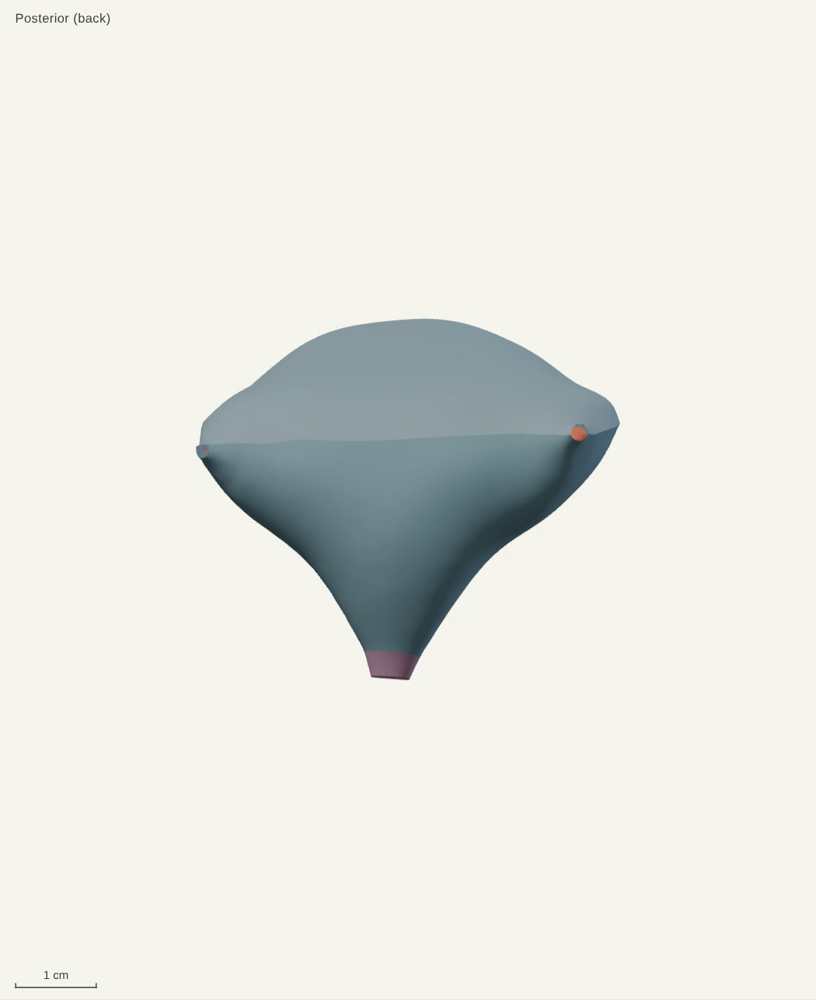

Interactive organ viewCord and organs
Front and back views of the same four human structures. Each image comes from the downloadable 3D model. The colours distinguish anatomical surfaces.
Cord and organs
Four structures in the female Human Reference Atlas. In the front view, the person’s right is on the left of the page.

Front
BackHeart
The chambers place the heart in the chest. The right ventricle makes up much of the front surface. The apex points towards the person’s left.

Front
BackSpinal cord
The atlas labels segments from C1 through S4. The thin cord ends above the pelvic organs. Each isolated structure has its own scale bar.

Front
BackColon
Follow the bowel from the caecum on the person’s right across the abdomen and down to the rectum. The surface gives the location for examining a local gut reflex.

Front
BackUrinary bladder
The broad upper wall narrows towards the bladder neck. The separate views of the bladder and rectum sit in the same pelvic reference frame.

Front
Back